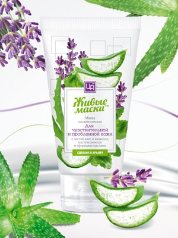

Магазин натуральной косметики "COSMO"
Маска с пастой алоэ и каланхоэ для чувствительной
и проблемной кожи

Об этой маске :
Разглаживает мелкие морщинки, увлажняет и питает,
улучшает цвет лица, кожа приобретает свежесть,
эластичность и здоровый вид.
Состав :
Вода подготовленная, масло подсолнечных семян, глицерин,
паста алоэ, паста каланхоэ, акриловый сополимер, масло авокадо,
экстракт чистотела, экстракт тысячелистника, бензойная кислота,
масло эфирное лимона, лаванды, кедра, эфирное сандала.
Применение :
На предварительно очищенную кожу лица, шеи, зоны декольте
нанести маску густым слоем снизу вверх по массажным линиям,
оставляя места возле глаз свободными, на 10-25 минут.
Остатки маски удалить спонжем и ополоснуть кожу водой.
Использовать 2-3 раза в неделю.
Противопоказания :
Индивидуальная непереносимость к одному из компонентов бальзама.
- Вес 140гр
- Срок годности 12 мес
©«Все права защищены»